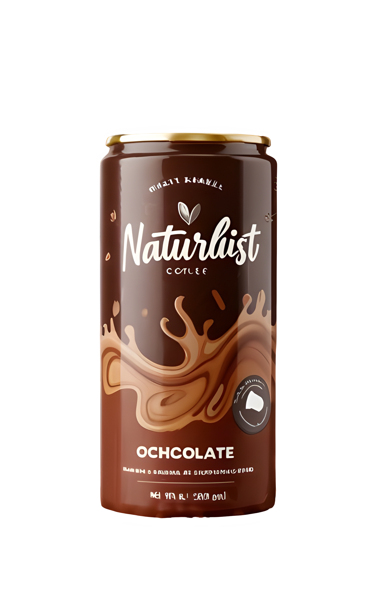
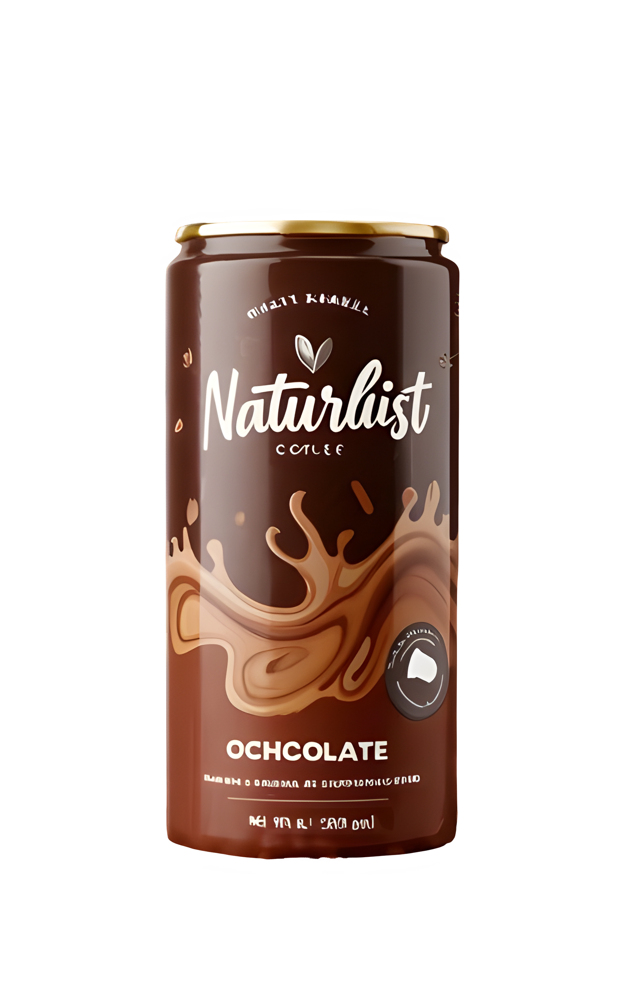

Naturalist
 



Flavour Updated
A Chocolate Can Shake is a rich and creamy beverage served in a convenient can, perfect for on-the-go indulgence. It typically features a smooth blend of chocolate, milk, and sweeteners, creating a velvety texture and a deliciously sweet cocoa flavor. Some variations may include whipped cream, cocoa powder, or chocolate syrup for extra decadence. Designed for convenience, the can packaging ensures easy storage and portability, making it a great choice for a quick treat, post-workout refreshment, or a delightful dessert drink. Some brands also offer protein-enriched, dairy-free, or low-sugar options, catering to different dietary preferences.